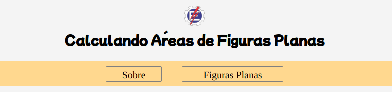

Calculando Áreas de Figuras Planas
Intuito do Site
Projeto de site para o primeiro trabalho de Desenvolvimento de Sistemas Web, com intuito de colocar em prática o aprendizado adiquirido durante as aulas.
A proposta inicial do nosso site, é a mostragem de resultados da área das principais figras planas que se aprende, inicialmente, durante a vida letiva de estudantes do ensino fudamental, já que a procura por esses mecanismos são bem grandes nos dias de hoje, principalmente por pessoas nessa faixa etária.
Além disso, planejamos usar esse projeto e melhorar ele com as novas praticas que iremos aprender daqui em diante, vamos otimizar com os novos métodos e também com novas figuras planas, além de adicionar figuras sólidas, tridimensionais e etc para abrangir mais pessoas que precisam ou gostam dessas mecânicas para facilidades do dia-a-dia.
Mockup Utilizado
Para o projeto, resolvemos utilizar de blocos coloridos para conter as figuras e os campos de informação, bem como os botões para cálculo. De maneira geral, o site tem uma interface organizada e bem dinâmica e didática, já que está tudo explicado para guiar o usuário até onde ele quer ir, contendo um menu autoexplicativo. A seguir, tem-se imagens da interface utiizada:
Interface de figuras
Calculos sendo feitos
Menu de fácil navegação